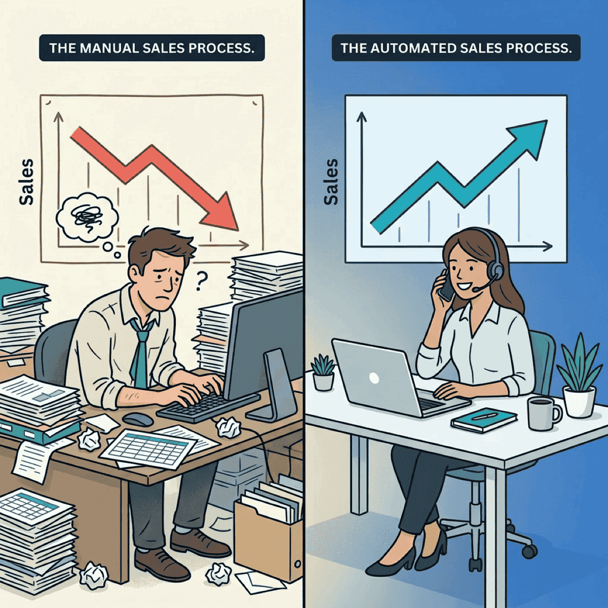

The First Department to Automate Is Never the One You Think

TL;DR
- Most CEOs pick customer service as their first automation target — high headcount, visible, and usually wrong
- Back-office operations deliver the fastest ROI because processes are documented, measurable, and nobody’s identity is tied to data entry
- Admin work bleeds into sales — your reps spend 60% of their time on non-selling tasks, and every hour recovered is revenue capacity unlocked
- Use the 4-factor scoring framework to pick the right first department and prove results in 30 days
Your sales reps spend 60% of their time not selling. They’re updating CRM records, chasing contract approvals, reconciling commission reports, and sitting in internal meetings.
The fix isn’t a better CRM or another sales enablement tool. It’s automating the back office.
I wrote recently about AI-buying out your own company before a PE firm does it for you. That post ended with a challenge: start with one department, map the automatable surface area, run the math. This post answers the obvious next question — which department?
The answer surprises almost everyone.
Customer service looks obvious. That’s the problem.
Every CEO I talk to wants to automate customer service first. The logic makes sense on the surface: it’s your highest-headcount department, the work is visible, and chatbots have been around forever.
But visibility is a liability for a first automation project.
Customer service reps see themselves as helpers. Their identity is tied to the work. When you tell them a bot is taking over, you’re not just changing a process — you’re threatening how they see their role.
Resistance is high, adoption is slow, and every failure is customer-facing.
Remember Klarna? They cut headcount 40% and replaced customer service with AI. Service quality degraded. The CEO publicly admitted they went too far, and they started rehiring humans. Engineers were answering phones.
The ROI math for customer service automation is also messy. You’re measuring CSAT, NPS, retention, resolution time — all indirect. Compare that to back-office automation where you can measure dollars saved per invoice or hours recovered per month.
Clear inputs, clear outputs.
If you started with customer service and stalled, you’re not alone. The problem wasn’t the technology. It was the target.
The most expensive admin work in your company isn’t being done by admin staff — it’s being done by salespeople.
— Clarke Bishop
Start where nobody’s watching
Back-office operations — finance, HR admin, compliance documentation — score highest on every dimension that predicts first-automation success.
The processes are already documented. Error rates are already tracked. And here’s the key: nobody’s identity is tied to data entry. Finance clerks process invoices. They don’t call themselves “invoice people.” That means lower resistance and faster adoption.
The numbers back this up. Core automation delivers 20-30% cost relief, and intelligent automation reduces processing errors by as much as 70%. Meanwhile, 93% of CFOs report shorter invoice processing times once they automate.
Take invoice processing as a concrete example. PDFs arrive, data gets extracted, routed for approval, classified into the GL. Gaining 10-15 minutes per invoice across 500 invoices a month means 80-120 hours recovered — every month.
Finance teams using payment automation have freed over 500 hours annually, according to American Express data. That’s nearly 10 hours per week returned to a team that was already stretched thin.
And here’s what makes back-office automation compound: once you automate invoice processing, the same patterns apply to expense reports, purchase orders, and vendor onboarding. The playbook repeats. Each new workflow you automate takes less effort than the last because the infrastructure and change management muscle are already in place.
Clear. Measurable. Boring. That’s exactly the point.
Your salespeople are doing back-office work (and it’s costing you deals)
Here’s the insight that changes the ROI calculation entirely: back-office work doesn’t stay in the back office.
It metastasizes into every revenue-generating function. And the most expensive example is sales.
Salesforce’s State of Sales report found that reps spend only 40% of their time actively selling. The other 60% goes to admin — CRM data entry, internal meetings, searching for information, generating quotes.
Even before the current wave of AI tools, McKinsey found that early adopters of sales automation reported efficiency gains of 10-15% and sales uplift of up to 10%. Today’s tools are far more capable.
Think about what that means in dollars. If your average rep closes $500K per year in 40% of their time, and automation recovers even 15% of their week, that’s potentially $187K in recovered selling capacity. Per rep. Multiply that across a ten-person sales team and you’re looking at nearly $2M in unlocked revenue capacity — without hiring anyone.
Unlike a back-office clerk making $55K, every hour a salesperson spends on admin has revenue opportunity cost attached. A rep doing CRM data entry isn’t selling. A rep chasing contract approvals isn’t closing. A rep reconciling commissions isn’t prospecting.
This is the admin bleed problem. The work that should stay in the back office leaks into your most expensive teams. And it doesn’t show up on any P&L line item — it hides inside the salaries you’re already paying.
That reframes the entire business case. Back-office automation ROI isn’t just “save admin costs.” It’s “unlock revenue-generating capacity across the organization.”
How to pick your first department (the 30-day test)
Stop guessing. Score each department on four dimensions that predict first-automation success.
1. Automatable surface area
What percentage of the work is rules-based, repetitive, and already documented? Higher means easier wins. Finance and HR admin score highest here — the processes are already in runbooks.
2. Resistance to change
How tied is team identity to the current process? Finance clerks process invoices; they don’t identify as “invoice people.” Customer service reps identify as helpers. Low resistance means faster adoption.
3. Measurability
Can you measure before and after in dollars or hours? Clear metrics make it easier to build the business case for expanding to department two. Finance wins again — every process has a cost-per-transaction baseline.
4. Speed to ROI
Can you show results in 30 days? Early wins build the political capital for bigger bets. 74% of executives report achieving AI ROI within the first year, according to Google Cloud. But the best first targets prove value in weeks, not months.
Here’s how it typically shakes out for service companies:
| Department | Surface Area | Resistance | Measurability | Speed | Overall |
|---|---|---|---|---|---|
| Finance/Accounting | High | Low | High | Fast | Best |
| HR Administration | High | Low | Medium | Fast | Strong |
| Sales Operations | Medium | Medium | High | Fast | Strong |
| Operations/Scheduling | Medium | Medium | High | Medium | Good |
| Customer Service | High | High | Low | Slow | Weakest |
The surprise: customer service scores lowest despite having the most headcount. High resistance, messy metrics, and slow rollouts make it the worst first target — even though it looks like the obvious one.
Start where you can prove results in 30 days, not where you have the most people.
— Clarke Bishop
Start with one workflow — prove it in 30 days
Don’t try to automate an entire department at once. That’s the mistake companies make when they go after customer service — they try to boil the ocean and stall out three months in.
Instead, pick one workflow — invoice processing, expense reports, onboarding paperwork — and prove the model in 30 days. The companies doing automation well share a pattern: they start small, measure ruthlessly, and expand from proof.
Here’s the playbook:
- Week 1: Map the current process end-to-end. Count the steps, measure the time, calculate the cost
- Week 2: Deploy automation on the highest-volume, lowest-risk step
- Week 3: Measure results against the baseline
- Week 4: Present the business case for expanding — with real numbers, not projections
That 30-day win becomes your internal case study. It builds executive buy-in, reduces resistance in the next department, and creates momentum that compounds.
Why does this matter so much? Because the second automation project is harder to kill than the first. Once your CFO sees 80 hours recovered per month in accounts payable, the conversation shifts from “should we automate?” to “what’s next?” And once your sales team sees admin tasks disappearing from their day, they’ll be asking for more — not resisting.
The right first automation target isn’t the department with the most people. It’s the one where you can prove results fast, build momentum, and unlock capacity in the teams that actually drive revenue.
Score your departments against the four factors: automatable surface area, resistance to change, measurability, and speed to ROI. Pick one workflow in the highest-scoring department. Prove the model in 30 days.
The answer is usually obvious within an hour. And the ROI you unlock won’t just show up in your back office — it’ll show up in your sales pipeline.
Ready to accelerate your AI initiatives? Let’s talk about how fractional CTO support can help you identify the right first automation target.